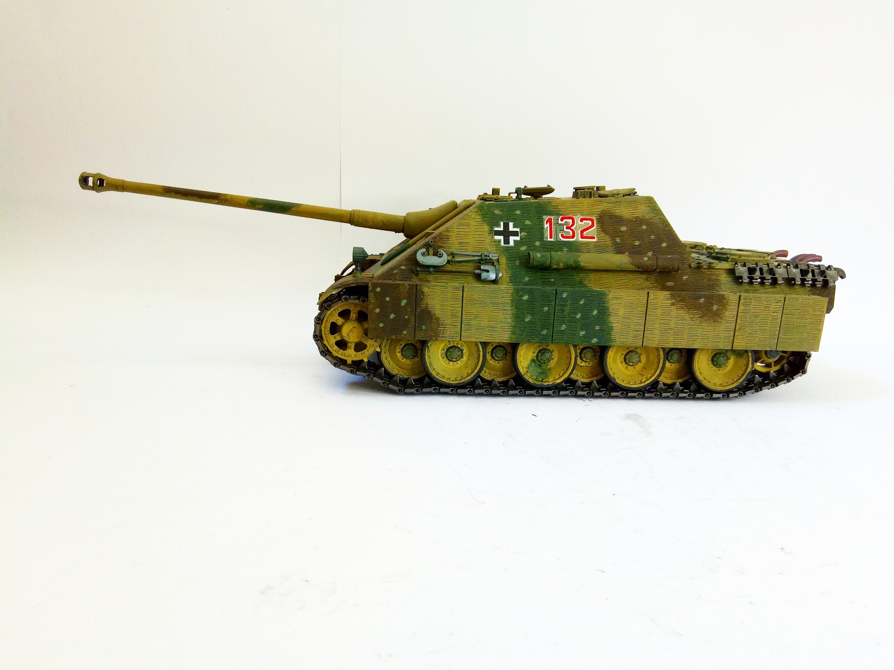
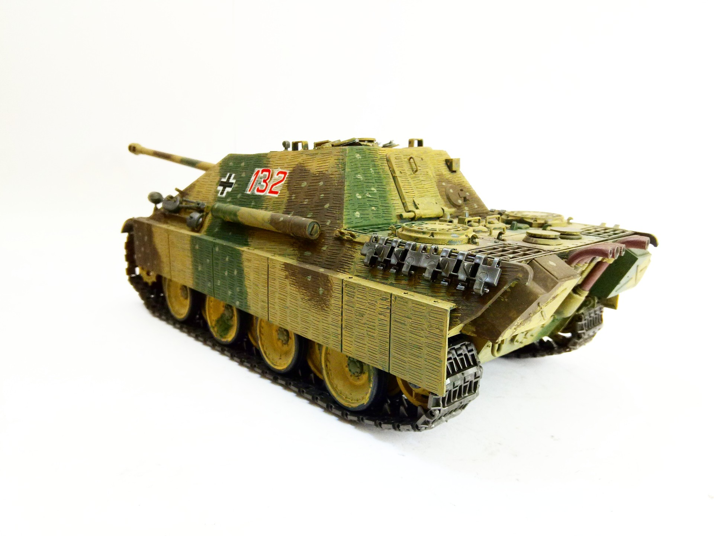

Mezzi militari · scale model archive
„Jagdpanther“ (Sd.Kfz. 173)
„Jagdpanther“ (Sd.Kfz. 173) — Kit: Academy, Scale: 1/25. #1/25 #Academy

Photo gallery

English description
#1/25 #Academy
Mezzi militari · scale model archive
„Jagdpanther“ (Sd.Kfz. 173) — Kit: Academy, Scale: 1/25. #1/25 #Academy

